Kamikawa, Hyogo: things to do, food and stays
Kamikawa · Hyogo
Kamikawa
Highlighted on the Hyogo map.
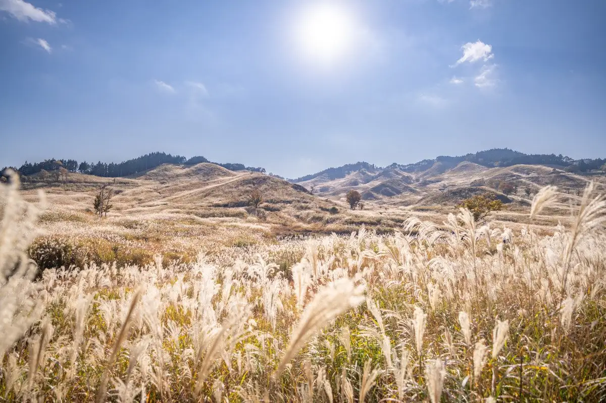
Stay
峰山高原 ホテルリラクシア
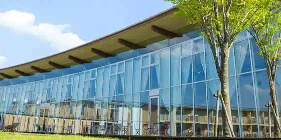
Mineyama Kogen Hotel Rirakushia
Hotel in Ueoda, Kamikawa with a quiet countryside setting.
一棟貸古民家宿GLAMINKA
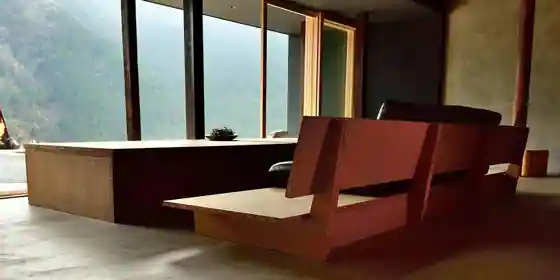
Hitomune Tai Ko Minka Yado GLAMINKA
Inn in Minamioda, Kamikawa with a renovated traditional house.
一棟貸し COROHIMERIVER
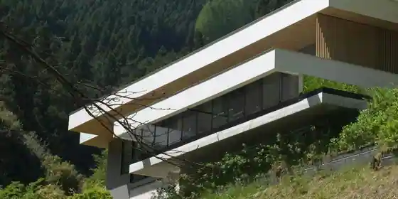
Hitomune Kashi COROHIMERIVER
囲炉裏の宿 豊楽
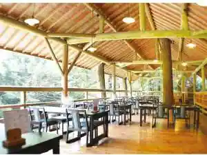
Irori No Yado Buraku
Inn in Ueoda, Kamikawa with an irori hearth dining room and kaiseki dinners.
越知谷キャンプアグリビレッジ
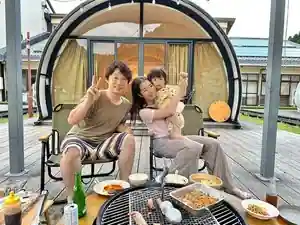
Ochi Tani Kyanpuaguribirejji
新田ふるさと村
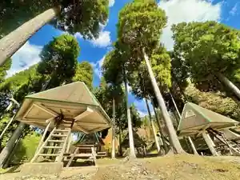
Nitta Furusato Mura
Inn in Nitta, Kamikawa with family-friendly stays.
COROHIMERIVER(カロひめリバー)
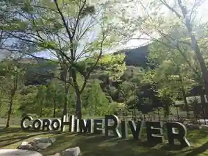
COROHIMERIVER(Karo Hime Riba)
RADOHRE神河
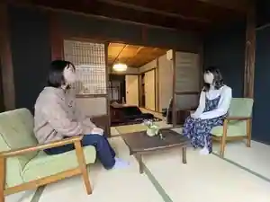
RADOHRE Kamikawa
兵庫県神河町の古民家一棟貸切宿 庭の宿シリーズ 星と風の庭
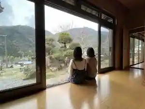
Hyogoken Kamikawa Machi No Ko Minka Hitomune Kashikiri Yado Niwa No Yado Shirizu Hoshi To Kaze No Niwa
Inn in Minamioda, Kamikawa with a renovated traditional house.
ｙｏｇｏｔｏ
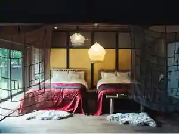
yogoto
Dining
かんざき 大黒茶屋
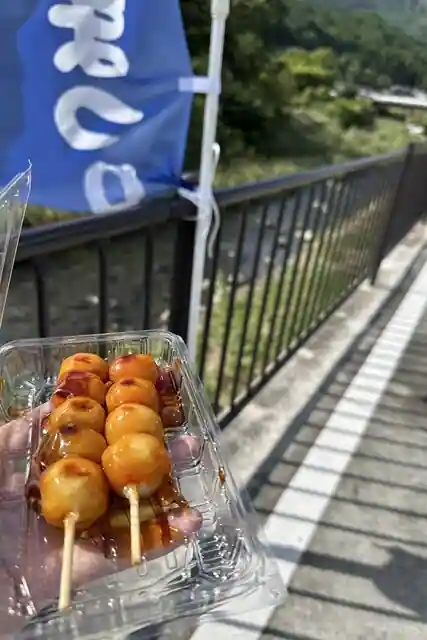
Kanzaki Daikoku Chaya
ファー タイ
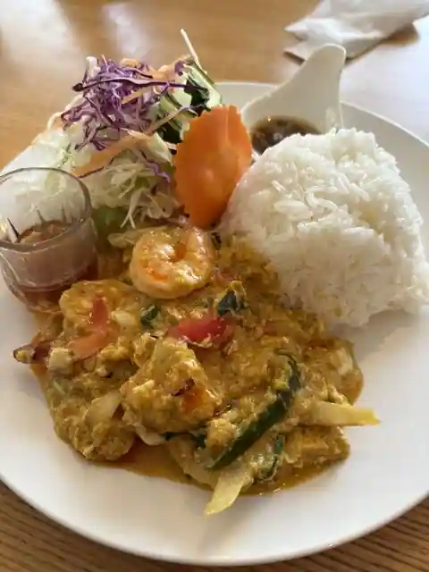
Fa Tai
創作料理 春夏秋冬
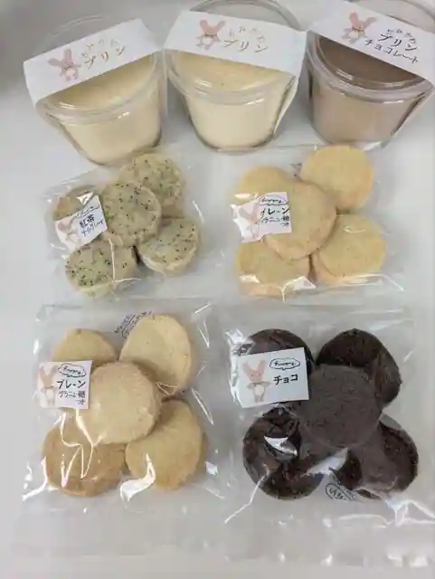
Sosaku Ryori Shunkashuto
ビコーズ
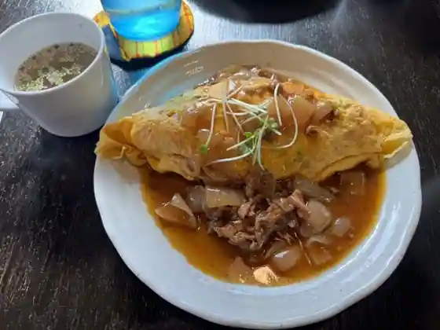
Bikozu
GELATO&CAFE ひよこ
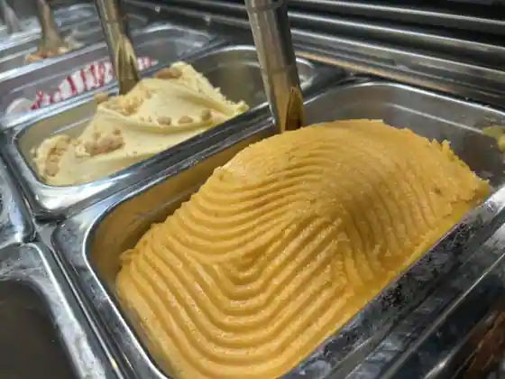
GELATO&CAFE Hiyoko
余田屋
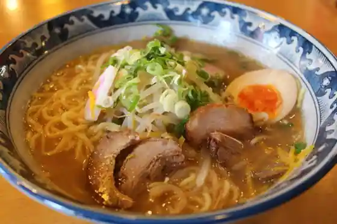
Yoda Ya
ばくの家
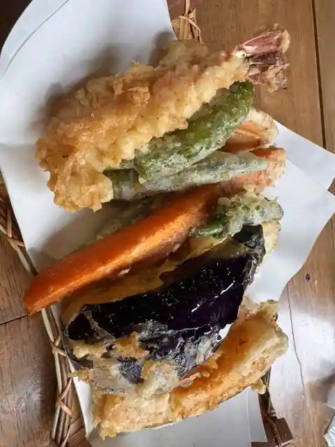
Bakuno Ie
薪窯パン工房 丸藤
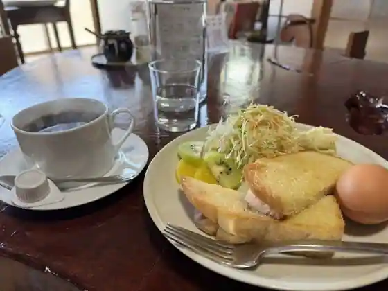
Takigigama Bakery Kobo Marufuji
ブーランジェリー ミヤパン
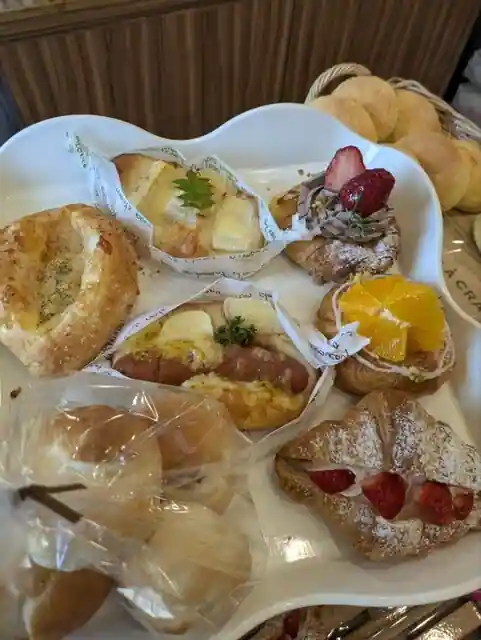
Buranjieri Miya Bakery
平家そば処 交流庵
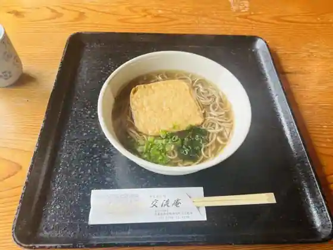
Heike Soba Tokoro Koryu Iori
ホテルモンテローザ
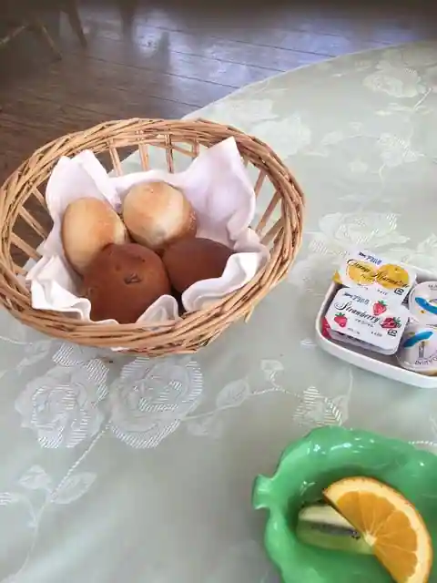
Hotel Monteroza
峰山高原ホテル RelaXia
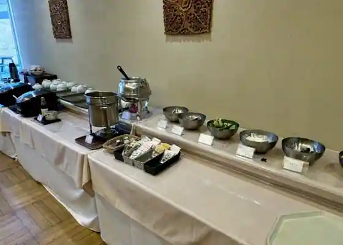
Mineyama Kogen Hotel RelaXia
八番
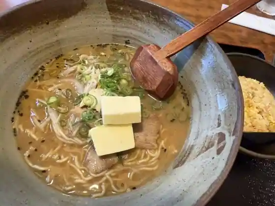
Hachiban
こっとん亭
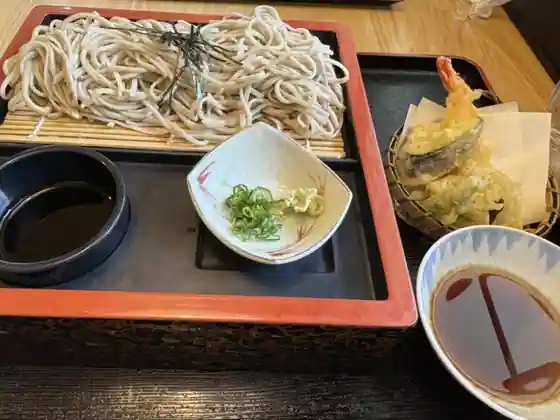
Kotton Tei
カフェ イコイ
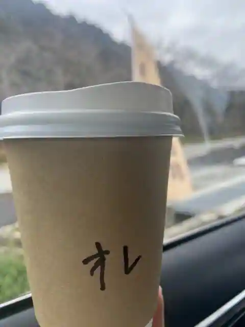
Cafe Ikoi
柳月堂玉川
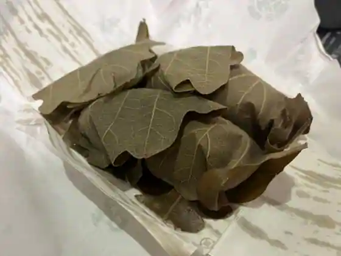
Yanagi Gatsu Do Tamagawa
IKOMAI CAFE
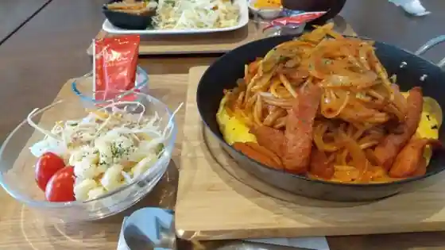
IKOMAI CAFE
小森珈琲店
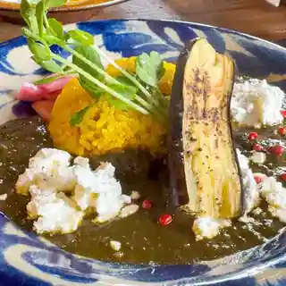
Komori Coffee
彩
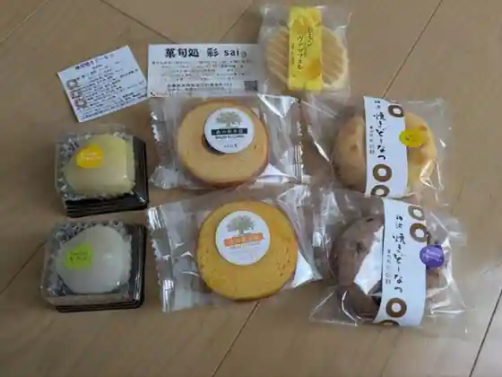
Sai
台湾料理 味香園
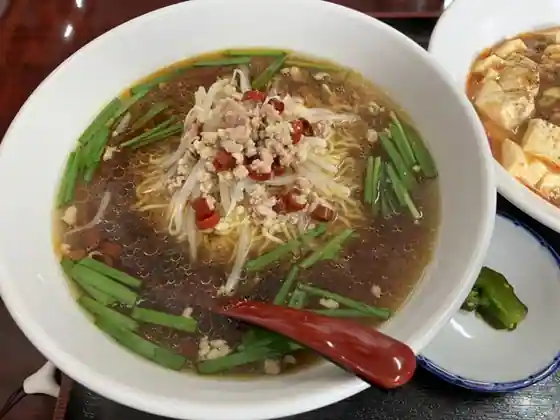
Taiwan Ryori Ajika Sono
ベルク
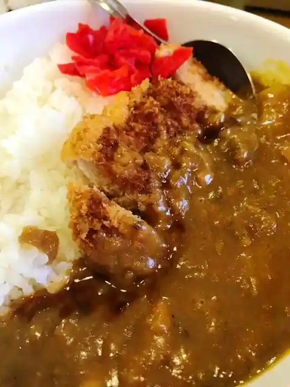
Beruku
咲
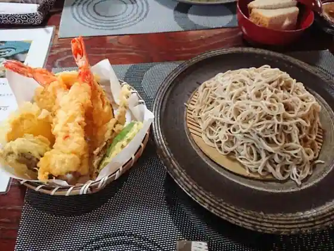
Saki
Sights
to Mine Highlands